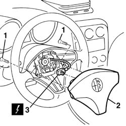
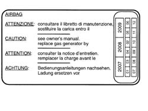

5580C18 air bag module - r+r
- Path
- Procedures > 55 ELECTRICAL EQUIPMENT > 5580 SPECIAL ACCESSORIES > 5580C air bag system > 5580C18 air bag module - r+r
- Kind
- repair procedure (removal / refitting; the operation number is the code)
- Applies to
- all engines; all production periods
- Interactive page
- https://sloeber94.github.io/elrnDB-a156/en/#/3238527
Applies to: all engines; all production periods
Applies to: all engines; all production periods
 Removing
Removing
 Refitting
Refitting1. Unscrew the screws.
2. Move slightly the Air Bag module.
3. Disconnect the electric connection.
 | Name | Connector |
|---|---|---|
3 | Driver's Air Bag |

Applies to: all engines; all production periods
Put the Air Bag module in the special cabinet on a free surface and place the inflatable bag upwards.
Applies to: all engines; all production periods
Refitting
RemovingObserve the following precaution.
If a new module is installed, place the relative labels.
Remove the removable part of the adhesive label from the new module, put it in a special dossier and write the car data (model, registration book, chassis number) and the serial number of the old module.
The dossier must be kept for possible checks.
Together with the module a new adhesive plate is provided, which has to be sticked on the one already present on the driver side door post.
But previously it has to be pierced on the correspondentant month and on the 10 years following the year in which the module is mounted. (for ex.the year 2007 will correspond to 1997)

Applies to: all engines; all production periods
Reconnect the electric connection.
Replace the Air Bag module into its seat .
Screw the screws and block them to the prescribed couple.
 | Fastening | Component | Ø | Value (daNm) |
|---|---|---|---|---|
- | Bolt | AIR BAG MECHANICAL MODULE | M6 | 0.8 |
Connect the battery.
Check the system functionality by means of
Examiner or other diagnosis instruments.
Topics linked from this page (1)
Topics that link to this page (27)
- 2127A30 GEAR SELECTOR LEVER for electro-hydraulic gearbox on STEERING WHEEL , (one), left or right - R.R.
- 3330B42 pedal unit mount - r rfor right hand drive versions
- 3330D03 brake servo/pump assembly - r r for right-hand drive versions
- 4110A11 steering wheel - r+r for replacement or check for versions with air bag
- 4110A30 Steering control shaft SUPPORT - R.R.
- 5010B24 under-facia air ducts r r
- 5020A10 heater box - r+r
- 5020L10 additional heater system boiler - r r
- 5040B30 expansion valve (tube orifice) - r+r
- 5040C10 air conditioner box - r+r
- 5040C50 air conditioner heater radiator - r+r
- 5040D52 air inlet and recirculation flap actuator - r r
- 5040D76 air contitioner distribution flap control motor - r r
- 5040D84 air conditioner left hand air mixer flap control motor - r r
- 5040D86 air conditioner right hand air mixer flap control motor - r r
- 5040D90 air conditioner system wiring bundle - r r
- 5505A26 bonnet wiring - r r
- 5505C31 under-facia wiring - r r
- 5505C41 cabin wiring - r r
- 5550A12 complete stalk unit - r+r for versions with air bag
- 5550B10 horn control on steering wheel - r+r
- 5570T68 strip contact on stalk unit for radio controls - r+r with steering wheel removed
- 5580A10 cruise control lever assembly - r+r
- 5580C12 clock spring for air bag module on steering wheel r r
- 5580C80 airbag system wiring bundle - r r or replace
- 7040A10 instrument facia trim - r+r
- 7040A97 facia trim support beam - r r